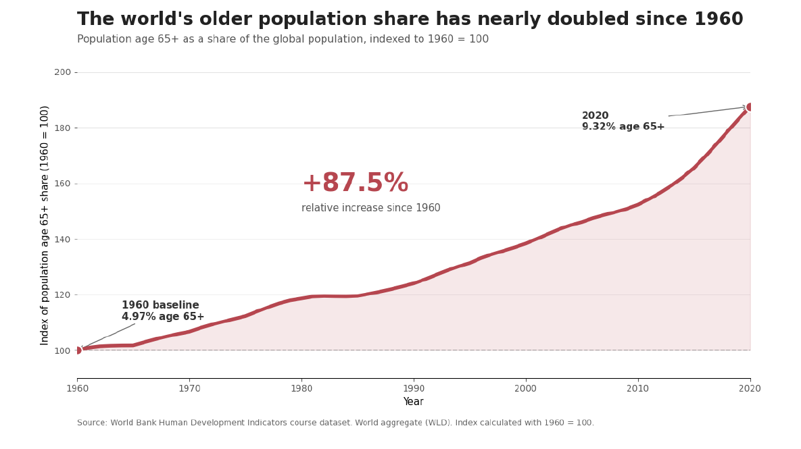
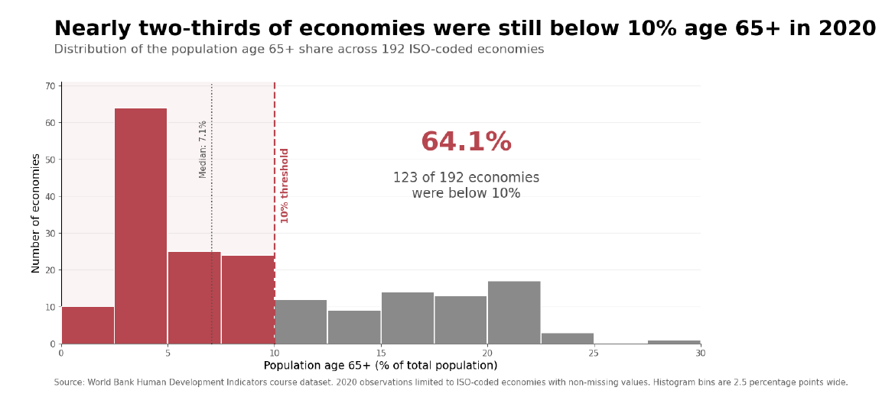

Persuasive
or Deceptive
Visualization?
Proposition: Population aging has become a major global demographic shift.
Dataset: Both visualizations use the same World Bank Human Development Indicators dataset and the same measure, Population ages 65 and above (% of total population). The opposing messages result from different transformations, aggregation choices, comparison frames, and visual emphasis rather than different source data.
Design-decision scores range from -2 (fully deceptive) to +2 (fully earnest).
FOR the Proposition

Design Decisions and Rationale:
- Relative-change framing — Score: -1.5. I transformed the age-65+ share from 4.97% in 1960 and 9.32% in 2020 into an index where 1960 equals 100. This makes the 87.5% relative increase visually prominent and strongly supports the claim that aging represents a major demographic shift. I considered showing only the raw percentage-point increase of 4.35 points, but that framing made the change appear substantially smaller, so I selected the indexed view for its greater persuasive impact.
- Truncated vertical scale — Score: -2. The vertical axis begins near 90 rather than zero, which increases the apparent steepness of the trend. This works well for emphasizing change around the indexed baseline of 100, but it also visually exaggerates the magnitude of the increase. I considered a zero-based axis, which would be more conventional and earnest, but chose the restricted scale because it makes year-to-year growth easier to see and strengthens the supporting argument.
- Global aggregation — Score: -1. Using the World aggregate produces a single smooth trajectory and makes population aging appear to be a unified global phenomenon. The advantage is a clear and memorable trend, while the limitation is that substantial cross-country variation disappears. I considered displaying many country-level trajectories, but those made the message less focused, so I retained the World aggregate to emphasize the overall shift.
- Annotations and source transparency — Score: +1.5. I explicitly display the original 1960 and 2020 percentages, the +87.5% calculation, year labels, and the World Bank source. These annotations let readers verify what the indexed transformation represents and partially counteract the more deceptive framing choices. I considered displaying only the index values for a cleaner and more dramatic chart, but retained the underlying percentages because the additional transparency makes the visualization more defensible.
Source: World Bank Human Development Indicators course dataset, Population ages 65 and above (% of total population).
AGAINST the Proposition

Design Decisions and Rationale:
- Chosen 10% threshold — Score: -1.5. I emphasize the fact that 64.1% of economies were below 10% age 65+ in 2020. Ten percent is an intuitive round threshold that supports the rhetorical idea of "fewer than one in ten," but it is not a naturally defined demographic boundary. I considered using the observed median or another cutoff, but chose 10% because readers can interpret it immediately and it produces the clearest opposing message.
- Equal weighting of economies — Score: -1. Every ISO-coded economy counts once regardless of population size. This makes the many economies with relatively young populations more influential than they are in the population-weighted World aggregate and therefore challenges the idea that aging is equally widespread. I considered population weighting, but that would largely reproduce the global trend used in the supporting visualization, so I used equal weighting to expose geographic heterogeneity instead.
- Histogram binning — Score: +0.5. I grouped the observations into 2.5-percentage-point bins so readers can quickly see the shape and concentration of the distribution. Binning works well for revealing the low-share cluster, although it hides individual economy values and small differences within each bin. I considered plotting all 192 economies individually, but the resulting display was more cluttered, so the histogram offered a clearer summary while retaining the full distribution.
- Contextual annotations and full distribution — Score: +2. The chart reports the complete distribution, sample size, median of about 7.1%, 10% threshold, axis labels, and the 64.1% calculation. Highlighting the below-threshold bars supports the opposing argument, while still allowing readers to see economies above 10% and judge the full distribution. I considered showing only the below-10% group, but displaying all observations was more transparent and prevents the persuasive framing from hiding contradictory evidence.
Source: World Bank Human Development Indicators course dataset. Analysis includes 192 ISO-coded economies with non-missing 2020 values.
Final Reflection
The most straightforward part of this project was keeping the underlying dataset and demographic measure constant. The more difficult part was realizing how many defensible analytical choices could lead readers toward very different conclusions. In the supporting visualization, converting the global age-65+ share to a 1960-based index changes a 4.35 percentage-point increase into a much more dramatic 87.5% relative increase. In the opposing visualization, shifting from a population-weighted global aggregate to equally weighted economies makes geographic variation much more prominent. Neither view requires changing the original data; the persuasion emerges from transformation, aggregation, scale, emphasis, and wording.
What surprised me most was that deceptive visualization does not necessarily require false values or obvious manipulation. Choices such as an axis range, a threshold, a denominator, aggregation level, or a title can substantially influence how a reader interprets accurate data. Some of these choices are also necessary for effective communication, which makes the boundary between persuasion and deception difficult to define. I now think ethical visualization depends not only on whether the numbers are technically correct, but also on whether important context has been withheld in a way that prevents readers from understanding reasonable alternative interpretations.
My boundary between acceptable persuasion and misleading visualization is therefore based primarily on transparency. A visualization can emphasize a particular perspective, but readers should still be given enough information to understand the transformation and evaluate the claim. In these two designs I intentionally use persuasive techniques, including relative framing, a truncated scale, a chosen threshold, and equal-country weighting, while retaining original percentages, sample sizes, axis labels, annotations, and data-source notes. Those disclosures do not eliminate the rhetorical effect, but they make the reasoning inspectable rather than disguising it.